label_parse() produces expression from strings by parsing them;
label_math() constructs expressions by replacing the pronoun .x
with each string.
Value
All label_() functions return a "labelling" function, i.e. a function that
takes a vector x and returns a character vector of length(x) giving a
label for each input value.
Labelling functions are designed to be used with the labels argument of
ggplot2 scales. The examples demonstrate their use with x scales, but
they work similarly for all scales, including those that generate legends
rather than axes.
See also
plotmath for the details of mathematical formatting in R.
Other labels for continuous scales:
label_bytes(),
label_currency(),
label_glue(),
label_number_auto(),
label_number_si(),
label_ordinal(),
label_percent(),
label_pvalue(),
label_scientific()
Other labels for discrete scales:
label_dictionary(),
label_glue(),
label_wrap()
Examples
# Use label_parse() with discrete scales
greek <- c("alpha", "beta", "gamma")
demo_discrete(greek)
#> scale_x_discrete()

demo_discrete(greek, labels = label_parse())
#> scale_x_discrete(labels = label_parse())

# Use label_math() with continuous scales
demo_continuous(c(1, 5))
#> scale_x_continuous()

demo_continuous(c(1, 5), labels = label_math(alpha[.x]))
#> scale_x_continuous(labels = label_math(alpha[.x]))

demo_continuous(c(1, 5), labels = label_math())
#> scale_x_continuous(labels = label_math())
